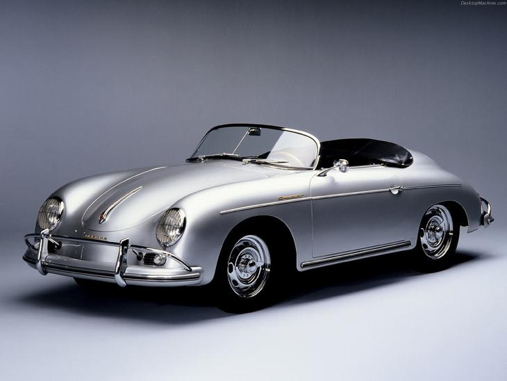
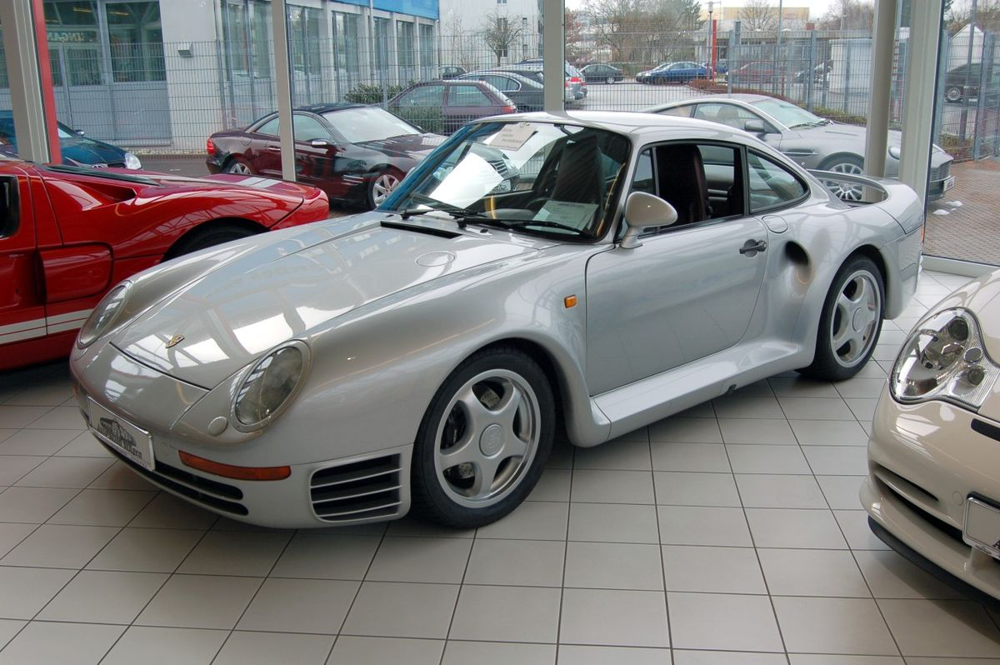

Porsche 356
Jednakże przed wojną biuro konstrukcyjne Porsche stworzyło projekt Porsche 114 z umieszczonym
centralnie silnikiem
typu V-10 chłodzonym wodą, który planowało wdrożyć do produkcji seryjnej po raz pierwszy pod marką Porsche.
Pomysł storpedowały władze III Rzeszy – więc projekt ten ostatecznie przystosowano
do podzespołów seryjnego VW Garbusa.
Tak powstał w 3 egzemplarzach model z aerodynamiczną karoserią wykonaną
z aluminium – znany jako Porsche Type 64. Na bazie tego projektu po II wojnie światowej
powstało Porsche 356.

Porsche 550 Spyder
i prototypy Roadster testowane
przez Waltera Glöcklera od 1951, fabryka zdecydowała się zbudować samochód,
który będzie skonstruowany specjalnie do wyścigów [1]. Model 550 Spyder
został zaprezentowany podczas Paris Auto Show w 1953 roku. Wyraźnie obniżona
konstrukcja miała na celu zwiększenie wydajności podczas wyścigów. To właśnie
tym modelem Hans Herrmann, były niemiecki kierowca Formuły 1 przejechał w ostatnich
sekundach pod zamkniętym szlabanem przed pędzącym pociągiem w Mille Miglia w 1954.

Porsche 959
W samochodzie jak na lata produkcji, zastosowano szereg nowatorskich rozwiązań technicznych:
nadwozie z kevlaru i aluminium, zaawansowany napęd na wszystkie koła czy silnik wyposażony w
system doładowania - na niższych obrotach mniejsza z turbosprężarek wspomagała pracę trzech
cylindrów, a przy wyższych druga turbina ładowała wszystkie sześć cylindrów, dzięki temu z
pojemności 2,8 litra silnik rozwijał moc 450KM. Silnik pochodził od wyczynowego pojazdu
Porsche 956, wcześniej używanego także w modelu Porsche 935[potrzebny przypis].
Później użyto go także w modelu Porsche 962, w którym osiągał moc ponad 700 KM[potrzebny przypis].
Pojazd miał ponadprzeciętne osiągi - 3,6 s do 100 km/h i prędkość maksymalną 300 km/h.
Razem z modelem F40 firmy Ferrari zapoczątkował erę superszybkich samochodów osobowych.